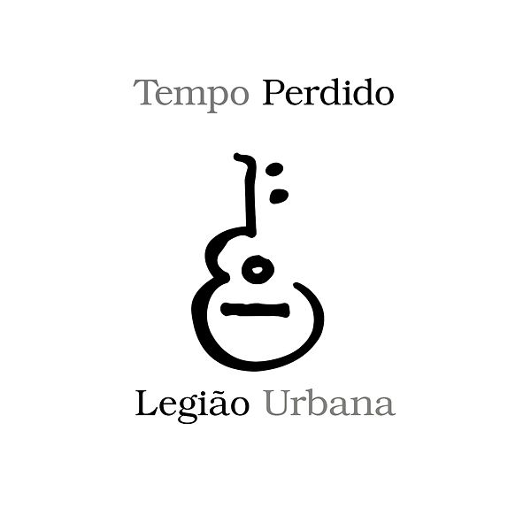

Todos os dias quando acordo
Não tenho mais o tempo que passou
Mas tenho muito tempo
Temos todo o tempo do mundo
Todos os dias antes de dormir
Lembro e esqueço como foi o dia
Sempre em frente
Não temos tempo a perder
Nosso suor sagrado
É bem mais belo que esse sangue amargo
E tão sério
E selvagem
Selvagem
Selvagem
Veja o sol dessa manhã tão cinza
A tempestade que chega é da cor dos teus olhos
Castanhos
Então me abraça forte
Me diz mais uma vez que já estamos
Distantes de tudo
Temos nosso próprio tempo
Temos nosso próprio tempo
Temos nosso próprio tempo
